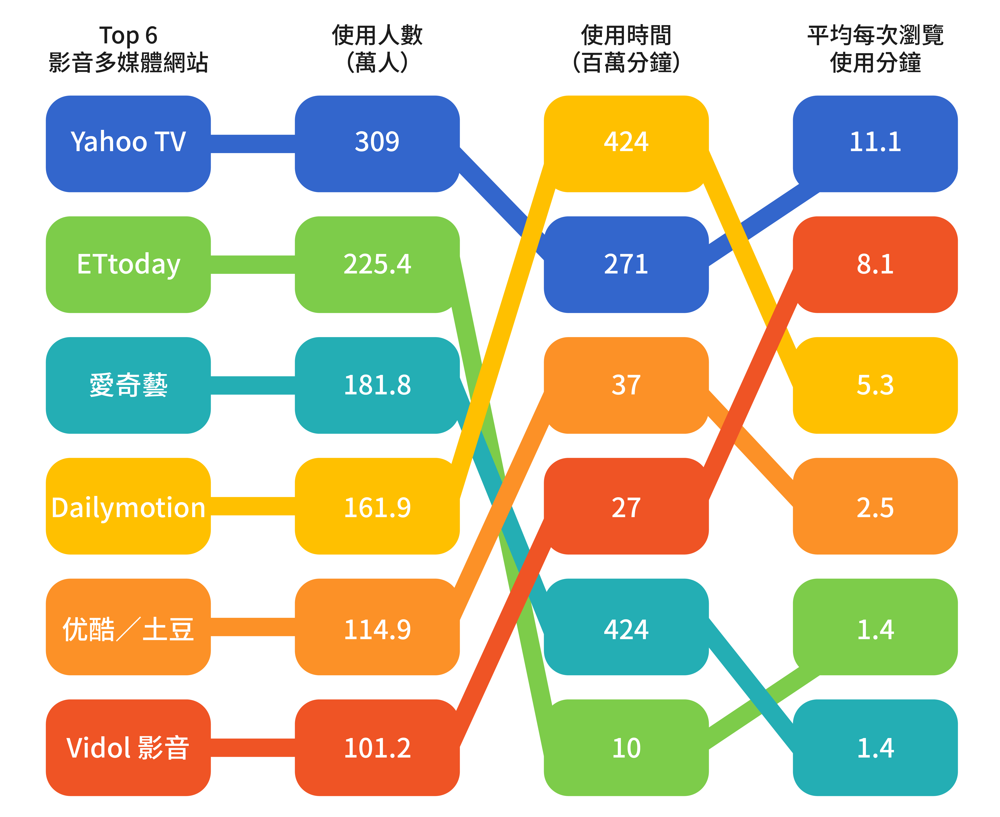

社會應用
內容媒體
社群媒體

智慧裝置
教育應用
線上遊戲
內容媒體
社群媒體
智慧裝置
教育應用
線上遊戲
台灣網路應用課題
網路科技日新月異，民眾的生活與網路及相關科技應用已密不可分，也逐漸改變了民眾的生活與消費習慣；網路服務應用可區分為網路服務社群應用、經濟應用和創新網路概念，共涵蓋 11 種服務應用。
網路服務社群應用為內容媒體、社群媒體、智慧裝置、教育應用、線上遊戲，網路服務經濟應用包含電子商務、分享經濟、金融科技，創新網路概念則有人工智慧、自駕汽車、區塊鏈。網路服務應用在國內已分別有相關應用與品牌，而創新網路概念應用較少。
社會應用
內容媒體
社群媒體
智慧裝置
教育應用
線上遊戲
內容媒體
社群媒體
智慧裝置
教育應用
線上遊戲
經濟應用
電子商務
金融科技
共享經濟
電子商務
金融科技
共享經濟
創新概念
人工智慧
自動駕駛
區塊鏈
人工智慧
自動駕駛
區塊鏈
使用率
88.5%
付費率
14.1%
使用者輪廓
影音、直播等內容媒體使用率將近九成，使用率與年齡呈現反比。
內容媒體使用情形
使用率最高的影音平台
觀察YouTube之外的影音平台，Yahoo TV收看人數最多，Dailymotion使用時間最突出。
平均每次收視時間
桌機／筆電
111.2 分鐘
手機
86.1 分鐘
平板電腦
84.9 分鐘
電視
114.4 分鐘
偏好收視類型
線上學習服務使用率僅佔14%，目前多數是語言學習的需求，並以12歲至19歲較多。
使用率
14%
使用者輪廓
線上學習服務使用率僅佔14%，目前多數是語言學習的需求，並以12歲至19歲較多。
使用者輪廓
線上學習服務使用率僅佔14%，目前多數是語言學習的需求，並以12歲至19歲較多。
使用類別
語言
44.8%
考試用教材
18.1%
烹飪
14.9%
學習內容
| 男性 | 名次 | 女性 | ||
|---|---|---|---|---|
| 語言 | 37.1% | 1 | 語言 | 51.6% |
| 考試用教材 | 21.5％ | 2 | 烹飪 | 24.2% |
| 科技／程式 | 15.7％ | 3 | 考試用教材 | 15.2% |
| 商業／工程管理 | 13.0％ | 4 | 生活應用相關 | 6.9% |
| 設計 | 7.1％ | 5 | 醫學／護理相關 | 6.4% |
使用率
41.6%
平均每週遊玩
11小時
使用者輪廓
男性有近半數會玩線上遊戲。
使用者輪廓
男性有近半數會玩線上遊戲。
使用的裝置
智慧型手機
89.8%
桌機／筆電
33.8%
平板電腦
12.1%
電視遊樂器
2.2%
使用率
64.2%
有賣東西
14.5%
有買東西
63.9%
平均每月花費
2418 元
使用者輪廓
女性更愛網購，而男性消費金額較高；較常網購的項目為服裝配件。
使用者輪廓
女性更愛網購，而男性消費金額較高；較常網購的項目為服裝配件。
較常購買產品
服裝、配件
45.7%
廚具、衛浴、清潔
25.7%
食品、飲料、餐券
21.5%
台灣電商品牌市場概況
台灣電商品牌與總類多元，也有不同產業的經營者。
| 經營模式 | 定義 | 代表商家 |
|---|---|---|
| B2B | 廠商透過平台上提供產品介紹及報價等，以進行企業與企業之間交易 | 台灣經貿網 |
| C2C | 個人對個人的電商平台，個人和商家皆能開設賣場 | Yahoo!拍賣、露天拍賣、蝦皮購物、PChome商店街個人賣場 |
| B2C | 電商採購商品或服務，直接銷售給消費者的商業模式 | Yahoo!購物中心、momo購物、PChome購物/24H |
| B2B2C | 網路平台招商，提供給供應商平台販售商品或服務 | Yahoo!超級商城、momo摩天商城、PChome商店街開店賣場、蝦皮商城、松果購物 |
| O2O | 利用線上行銷引導客戶至線下 | 17 Life、Gomaji |
| 業者類型 | 代表商家 |
|---|---|
| 台灣原生電商 |
|
| 外商網購平台 | Yahoo!拍賣、Yahoo!購物中心、Yahoo!超級商城、樂天（台日合資）、旋轉拍賣（新加坡）、蝦皮購物（新加坡） |
| 金融、媒體業者投資平台 | momo購物、udn買東西、Treemall、Orenda |
| 實體零售業者經營平台 | ibon mart、燦坤快3、EcLife良興購物網、家樂福線上購物網 |
| 電信業者投資平台 | Myfone購物、friDay購物 |
台灣網友造訪最多的電商品牌
電商網站PC使用量方面，momo購物網流量最高，但各項數量表現則普通，而總瀏覽網頁最高為拍賣類型網站「Yahoo!奇摩拍賣」及「露天拍賣」，並且以「露天拍賣」網友回訪情形最佳。
| PC 網友人數 Top 10 電商零售網站 |
總瀏覽數 （百萬頁） |
平均每人瀏覽頁數 | 平均每人造訪次數 | |
|---|---|---|---|---|
| 1 | momo 購物網 | 75 | 28 | 5.7 |
| 2 | Yahoo!奇摩拍賣 | 471 | 179 | 5.2 |
| 3 | 露天拍賣 | 468 | 179 | 7.0 |
| 4 | PChome* | 118 | 46 | 4.1 |
| 5 | Yahoo!奇摩購物中心 | 50 | 20 | 3.1 |
| 6 | 蝦皮購物 | 85 | 39 | 6.9 |
| 7 | Yahoo!奇摩超級商城 | 60 | 30 | 3.6 |
| 8 | 淘寶網 | 75 | 38 | 4.3 |
| 9 | 博客來 | 50 | 28 | 3.0 |
| 10 | PChome 商店街 | 106 | 81 | 5.5 |
網路銀行
網路銀行使用率
35.6%
網路銀行使用者輪廓
網路銀行使用者輪廓
網路銀行常用服務
轉帳
73.4%
帳戶查詢
48.9%
繳費
18.0%
網路銀行使用原因
使用網銀的原因有方便好操作，而不使用者則有資訊安全的疑慮
網路銀行品牌市佔
無論是網頁或App版，都是以中國信託的使用率最高。
| 網頁版使用排名 | 名次 | App版使用排名 |
|---|---|---|
| 中國信託商業銀行 | 1 | 中信行動達人 |
| 國泰世華銀行 | 2 | 玉山商業銀行 |
| 玉山商業銀行 | 3 | 玉山行動銀行 |
| 郵局 | 4 | 台新國際商業銀行 |
| 台新國際商業銀行 | 5 | e動郵局 |
行動支付
行動支付使用率
16.3%
行動支付使用者輪廓
行動支付使用者輪廓
平均每月支付金額
2993元
佔所有消費平均比例
36.7%
平均使用支付App數量
1.47個
使用行動支付困擾
行動支付品牌市佔
共享經濟知曉度高，但使用大多不到兩成。
使用率
40.1%
聽過共享經濟
85.8%
有興趣使用的項目
交通
54.6%
服務
46.5%
物品
42.4%
空間
30.4%
品牌知曉度與使用率
| 類型 | 品牌 | 知曉度 使用率 |
轉換率* |
|---|---|---|---|
| 交通服務 | Uber | 92.8%
|
25.5％ |
| 23.7%
|
|||
| 車輛共享 | Obike | 77.3%
|
16.3％ |
| 12.6%
|
|||
| Zipcar | 46.9%
|
11.1％ | |
| 5.2%
|
|||
| Wemo | 44.7%
|
12.5％ | |
| 5.6%
|
|||
| 線上訂房 | Airbnb | 71.9%
|
27.4％ |
| 19.7%
|
|||
| 外送服務 | foodpanda | 70.6%
|
17.4％ |
| 12.3%
|
|||
| Uber Eats | 61.3%
|
20.1％ | |
| 12.3%
|
|||
| Honestbee | 61.3%
|
16.6％ | |
| 10.2%
|
|||
| 群眾募資 | 嘖嘖 | 45.7%
|
14.2％ |
| 6.5%
|
|||
| Flying V | 44.6%
|
14.3％ | |
| 6.4%
|
|||
| 群募貝果 | 42.6%
|
13.4％ | |
| 5.7%
|
人工智慧（Artificial Intelligence，簡稱為AI）指電腦系統或機器能具備像人類一樣的思考能力與行為，並做出判斷。相關應用如機器人、人臉/語音辨識、自駕汽車等等。
人工智慧在台灣應用雖不高，但聽過者卻將近百分之百。
聽過人工智慧
97.5%
未來有興趣使用
68.5%
使用過的人工智慧應用服務
自動駕駛汽車又被稱為無人駕駛汽車、無人車，汽車在移動過程中可以感測環境、導航，不需要透過人類直接駕駛。功能諸如：自動巡航控制、自動停車、定速、防撞、警示等等。
雖然台灣相關應用也不多，但自動駕駛汽車的知曉度也高。
聽過自動駕駛汽車
98.0%
未來有興趣購買
40.6%
未來有意願搭乘
45.3%
購買自動駕駛汽車考量
搭乘自動駕駛汽車考量
區塊鏈（block chain），藉由密碼學串接保護內容的串接交易紀錄，因為難以篡改，所以可以作為數位資產防偽的技術。例如：比特幣就是利用區塊鏈技術確保轉帳紀錄正確。
相較之下，區塊鏈認知度較低，而應用以金融為主。
聽過區塊鏈
47.7%
擁有加密貨幣
4.4%
應用重要性評估
| 服務 | 內容 |
|---|---|
| 醫療 | 讓散布的醫療資料整合，並利用加密技術，讓病患選擇授權開放的對象。 |
| 創作 | 透過區塊鏈音樂發行平台讓音樂人發行作品，也能讓獲利與分潤規則更透明。 |
| 保險 | 結合醫療紀錄，能加速理賠機制。 |
| 公益 | 以虛擬貨幣捐款時，能了解帳務用途，並提升帳務透明度。 |
| 農業 | 將農業生產、運送與銷售進行記錄，增加生產履歷可信度，透明化農業交易。 |
| 電競 | 遊戲玩家的個人資料和虛擬道具的買賣都能加密並在公開安全環境下交易。 |
| 金融 | 透過加密與透明化的特性，保護轉帳交易記錄。 |
Copyright © 2019 財團法人台灣網路資訊中心

社群通訊使用情形
使用者輪廓
通訊與社群網站的使用率皆高，而通訊軟體的使用族群中性別、年齡差異小。
使用者輪廓
通訊與社群網站的使用率皆高，而通訊軟體的使用族群中性別、年齡差異小。
社群使用率
80.6%
社群媒體使用率
Facebook市佔率最高，Instagram居次，主要使用族群為20世代。
社群媒體使用行為
網民使用社群媒體主要是瀏覽、按讚，以接受資訊為主。
通訊使用率
96.8%
通訊軟體使用率
Line使用者幾乎為全體網民，其次是臉書、即時通。
通訊軟體使用行為
通訊軟體主要使用情境是收發訊息，也有超過半數使用語音通話。